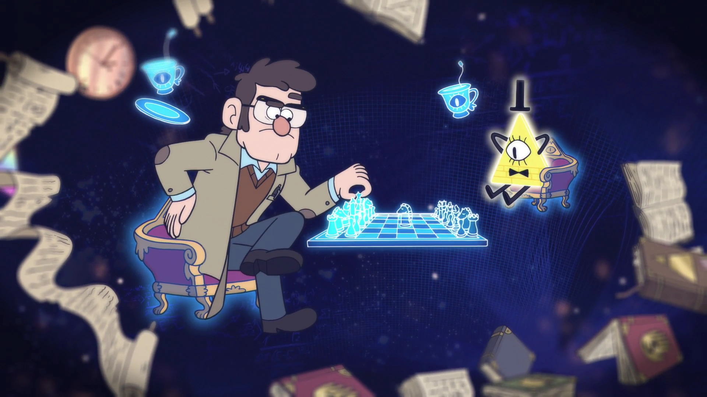

LOCATIONS

MYSTERY SHACK

GRAVITY FALLS FOREST

GRAVITY FALLS BUNKER

NIGHTMARE REALM

GRAVITY FALLS LAKE

TOWN OF GRAVITY FALLS

NORTHWEST MANSION

UNDERGROUND JAIL

MINDSCAPE

GRAVITY FALLS CEMENTARY